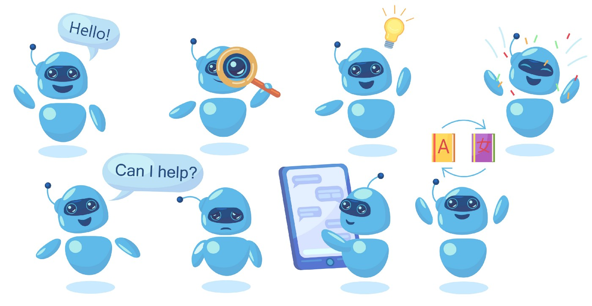

AI & Business Statistics — IIM Bangalore
Feb 2025 – Present. Executive program in Artificial Intelligence and Business Statistics at the Indian Institute of Management, Bangalore.
I am an Innovation and AI leader with nearly 14 years at SAP. I currently serve as Business AI Dev Expert and Head of Innovation Programs from SAP Labs India's Managing Director's Office, driving Business AI adoption and developer-community programs across SAP.
Most recently I led the content experience for SAP Labs India's internal Developer Festival 2026, reaching 14,000+ engineers across Bengaluru, Pune, and Gurugram. I combine deep technical roots — ABAP, cloud architecture, SAP BTP — with large-scale program leadership.
Alongside the day job, I'm pursuing an Artificial Intelligence & Business Statistics program at IIM Bangalore. I edit and write the weekly newsletter A Letter from AI on the intersection of AI and software development.
I started my career as an SAP ABAP/WebDynpro developer, building internal and external tools across S/4HANA and the broader SAP ERP stack. I then moved into full-stack development on Node JS and SAP UI5, designing admin and user applications deployed to SAP Business Technology Platform (BTP).
As Cloud Architect (2022–2025), I architected cloud-native solutions on SAP BTP with integrations across Cloud Identity Services, XSUAA and JWT-based auth, and led the d-shop maker space — SAP Labs India's in-house hardware/IoT experimentation lab.
Today I lead Business AI adoption and innovation programs from the MD's Office at SAP Labs India — including content leadership for d-com 2026 (14,000+ developers), the Employee Hub platform, and AI-Way-of-Working enablement for SAP Services.
Content Lead for d-com 2026 — SAP Labs India's developer festival reaching 14,000+ engineers across Bengaluru, Pune and Gurugram editions.
Driving Business AI adoption across Lines of Business; delivered the "AI Way of Working" enablement to 300+ SAP Services colleagues.
Architected cloud-native solutions on SAP BTP with Cloud Identity Services, XSUAA and JWT-based auth flows. Led the d-shop maker space.
Spearheading the shift to agentic engineering at SAP — building an autonomous macOS supervisor agent; integrating GitHub Copilot and Claude Code into the SDLC.
Currently pursuing Artificial Intelligence & Business Statistics at IIM Bangalore, alongside a B.Tech in Computer Science & Engineering from JNTU Hyderabad.
Feb 2025 – Present. Executive program in Artificial Intelligence and Business Statistics at the Indian Institute of Management, Bangalore.
2007 – 2011. Bachelors of Technology in Computer Science & Engineering from JNTUH College of Engineering, Hyderabad.
Issued Oct 2024 (valid through Oct 2027) by GitHub.
Nearly 14 years of experience in the software industry — 13+ at SAP — currently serving as Business AI Dev Expert and Head of Innovation Programs from SAP Labs India's MD's Office.
Mar 2025 – Present. Leading Business AI adoption and innovation programs from the MD's Office at SAP Labs India. Content Lead for d-com 2026 (14,000+ developers). Recipient of the Service Excellence Award 2026.
Apr 2022 – Mar 2025. Architected cloud-native solutions on SAP BTP with Cloud Identity Services, XSUAA and JWT-based auth. Led the d-shop maker space for hardware/IoT experimentation.
Oct 2016 – Mar 2022. Owned roadmap and delivery for cloud services offerings. Received the SAP Award & Recognition – Global Cloud Services Mentor in Sep 2021.
Sep 2012 – Sep 2016. Associate Developer and ABAP WebDynpro Consultant — built internal and external tools across SAP's ERP and S/4HANA stack. Earlier: ABAP Developer at ERP and ERP Corp (2012–14) and Developer at TechHub (2011–12).
I edit and write A Letter from AI, a weekly newsletter on the intersection of AI and software development (652 subscribers). Earlier writing on chatbots and conversational AI is on Medium.

Selected initiatives I've led or contributed to recently